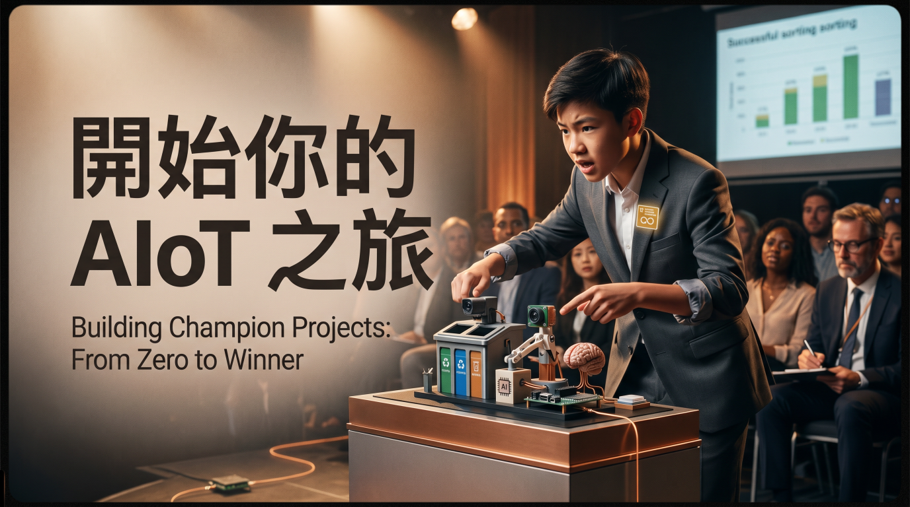
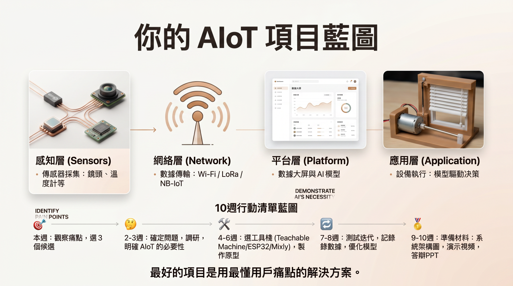
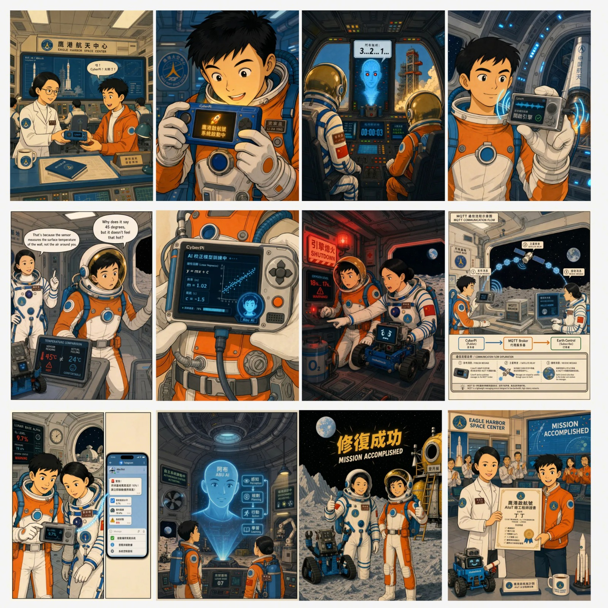

01
AIoT 學習套件
感測、控制、路徑與雲端資料，支援課堂觀察、作品展示與實機演示。
Program modules
感測、控制、路徑與雲端資料，支援課堂觀察、作品展示與實機演示。
我們派專人到學校教如何使用產品、如何組織課堂、如何帶學生完成第一個作品。
當學校熟悉 AIoT 場景學習後，可逐步加入 Skill 編寫、Agent 任務與月球車比賽。
8-hour learning journey
八個循序漸進的課堂單元，把感測、AI、通信與控制連成一個可操作的完整任務。
AIoT Project Guide
從真實問題出發，讓學生把感測、AI 判斷與設備行動組合成一個可展示、可測試、可持續改進的專題。

4-step method
觀察校園或社區，先定義值得解決的問題。
說明為何需要辨識、判斷或預測，而不只是自動開關。
使用低代碼工具與現成模組，先讓核心流程運作。
保留測試數據與改進過程，讓作品更完整可信。
不用 AI 就難以完成的辨識、判斷或預測。
回應安全、照護、環境或學習需要。
本地處理帶來速度、離線能力與私隱優勢。
感知、網絡、平台與應用形成閉環。
用真實情境、操作演示與測試結果說明作品。
Project directions
用聲音、影像或環境數據辨識需要關注的狀況。
偵測跌倒、活動異常或復康動作，提供及時提醒。
結合植物影像與環境數據，判斷健康與照護需要。
分析坐姿、光線、專注狀態或課室環境並作出回饋。

Lunar mission story
學生從接收任務、校正感測器、處理警報到連接 AI Agent，逐步把八小時所學轉化為可操作的月球探險 Project。
查看 8 小時學習路徑
Pricing
Comparison